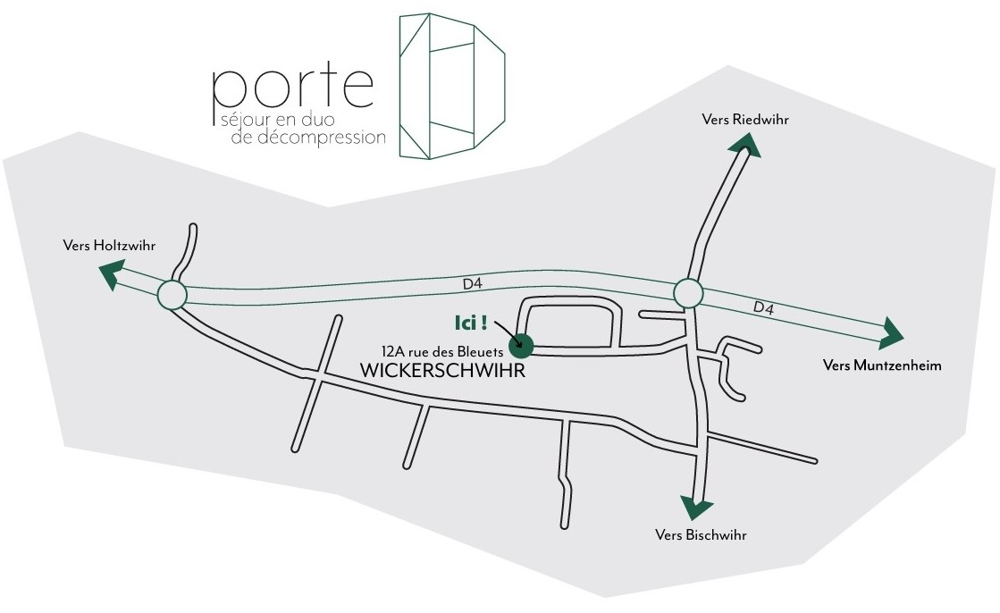

Le gîte Porte D se situe à
Wickerschwihr, à quelques minutes de Colmar, au
cœur de l’Alsace. Voici toutes les indications pour organiser
sereinement votre arrivée en voiture, en train ou depuis
l’aéroport.
Depuis Strasbourg
(environ 1h15)
Prenez l’A35 en direction de
Colmar / Mulhouse.
Sortez à Colmar (sortie 25).
Suivez ensuite la D83 vers
Wickerschwihr / Andolsheim.
Depuis Mulhouse
(environ 40 min)
Prenez l’A35 en direction de
Colmar / Strasbourg.
Sortez à Colmar (sortie 25).
Suivez ensuite la D83 vers
Horbourg-Wihr / Wickerschwihr.
En train
(Gare de Colmar)
Le gîte se trouve à environ 15 minutes de la
gare de Colmar.
Des liaisons régulières relient Colmar à
Strasbourg, Mulhouse, Bâle, Paris et
Freiburg.
En avion
(Aéroports les plus proches)
Aéroport de Bâle–Mulhouse–Fribourg : ~
50 min en voiture.
Aéroport de Strasbourg–Entzheim : ~
1h10 en voiture.

Plan d’accès au gîte Porte D à Wickerschwihr, à quelques minutes
de Colmar et de la Route des Vins d’Alsace.
Besoin de plus d'informations ?
Retrouvez ici tout ce qu’il vous faut pour préparer votre venue ainsi que nos tarifs.
Venir à Porte D
Accès & itinéraires
Le gîte Porte D se situe à Wickerschwihr, à quelques minutes de Colmar, au cœur de l’Alsace. Voici toutes les indications pour organiser sereinement votre arrivée en voiture, en train ou depuis l’aéroport.
Depuis Strasbourg
(environ 1h15)
Prenez l’A35 en direction de Colmar / Mulhouse.
Sortez à Colmar (sortie 25).
Suivez ensuite la D83 vers Wickerschwihr / Andolsheim.
Depuis Mulhouse
(environ 40 min)
Prenez l’A35 en direction de Colmar / Strasbourg.
Sortez à Colmar (sortie 25).
Suivez ensuite la D83 vers Horbourg-Wihr / Wickerschwihr.
En train
(Gare de Colmar)
Le gîte se trouve à environ 15 minutes de la gare de Colmar.
Des liaisons régulières relient Colmar à Strasbourg, Mulhouse, Bâle, Paris et Freiburg.
En avion
(Aéroports les plus proches)
Aéroport de Bâle–Mulhouse–Fribourg : ~ 50 min en voiture.
Aéroport de Strasbourg–Entzheim : ~ 1h10 en voiture.